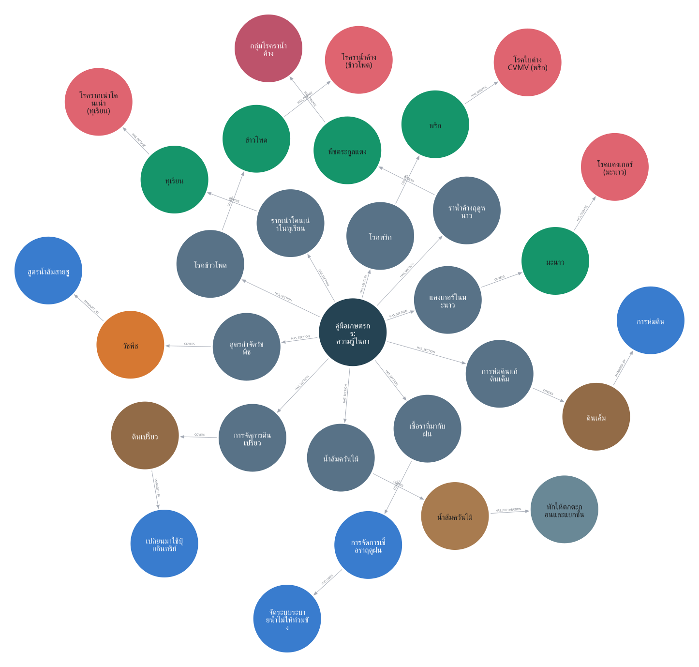
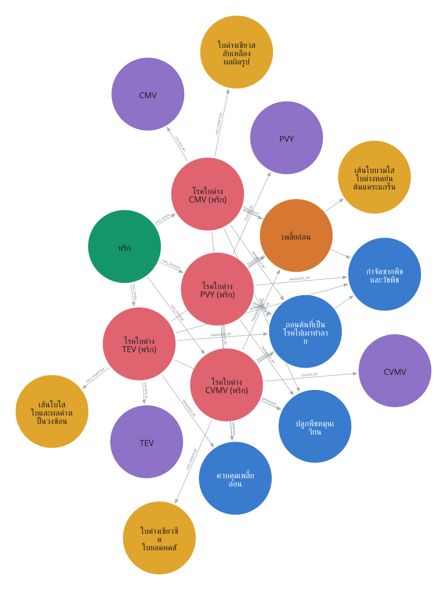
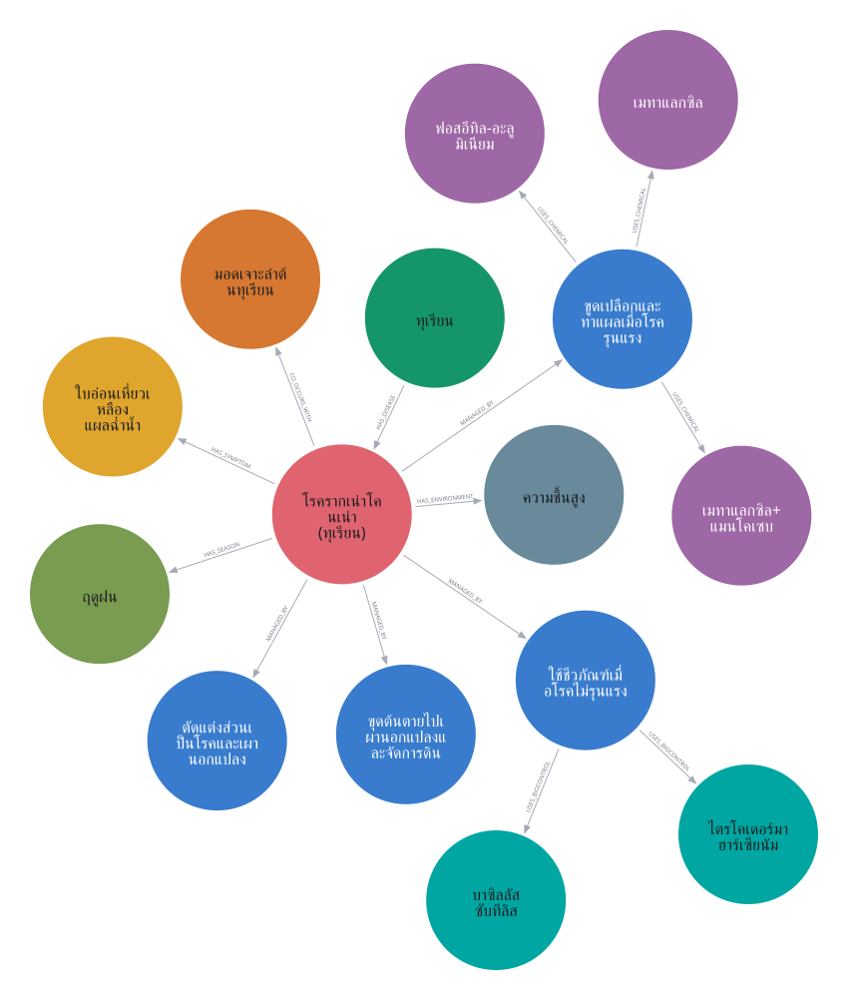
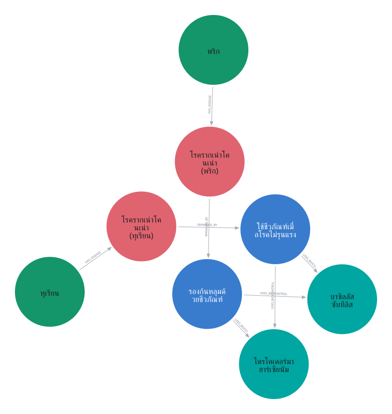
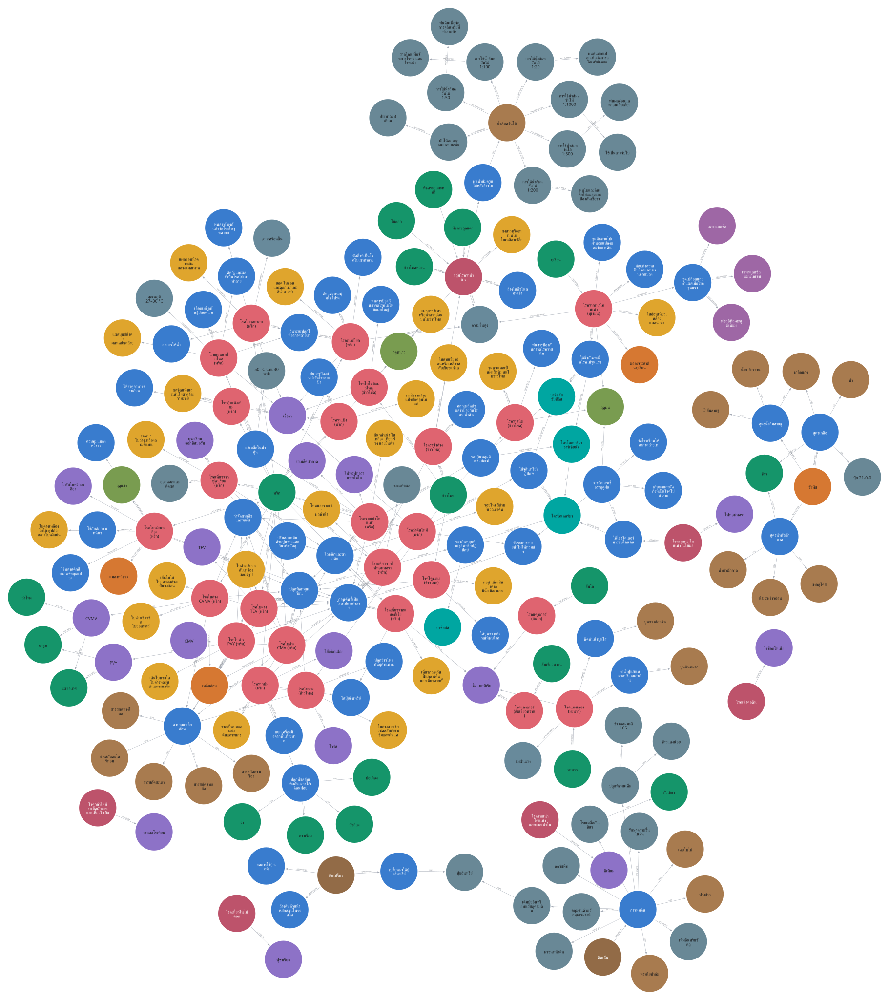

กราฟจาก Neo4j Browser โดยตรง
Neo4j 5.26.30 · ฐานข้อมูล neo4j · 266 โหนด / 879 ความสัมพันธ์
เฉพาะเนื้อหา 207 โหนด / 263 ความสัมพันธ์ · ตรวจข้อมูลที่อ่านกลับจากฐานข้อมูลตรงกับชุดต้นฉบับ
PNG และ SVG ดาวน์โหลดจากเมนู Download ของ Neo4j Browser; ไฟล์ *_browser.png เป็นภาพหน้าจอจริง รวม query และจำนวนผลลัพธ์
เปิด Neo4j Browser ในเครื่อง · ข้อมูลอ่านกลับจากฐานข้อมูล · ผลตรวจ
ภาพรวมความรู้ครบ 10 บท
31 โหนด / 30 ความสัมพันธ์ · Neo4j Browser native export

PNG จาก Neo4j · SVG จาก Neo4j · ภาพหน้าจอ Browser · Cypher ของภาพนี้
เจาะลึกพริก: ไวรัส 4 ชนิด เชื่อมด้วยเพลี้ยอ่อน
18 โหนด / 32 ความสัมพันธ์ · Neo4j Browser native export

PNG จาก Neo4j · SVG จาก Neo4j · ภาพหน้าจอ Browser · Cypher ของภาพนี้
เจาะลึกทุเรียน: รากเน่าโคนเน่า
15 โหนด / 14 ความสัมพันธ์ · Neo4j Browser native export

PNG จาก Neo4j · SVG จาก Neo4j · ภาพหน้าจอ Browser · Cypher ของภาพนี้
จุดเชื่อมข้ามพืช: ชีวภัณฑ์ร่วมกัน
8 โหนด / 8 ความสัมพันธ์ · Neo4j Browser native export

PNG จาก Neo4j · SVG จาก Neo4j · ภาพหน้าจอ Browser · Cypher ของภาพนี้
กราฟความสัมพันธ์เชิงเนื้อหาทั้งหมด
207 โหนด / 263 ความสัมพันธ์ · Neo4j Browser native export

PNG จาก Neo4j · SVG จาก Neo4j · ภาพหน้าจอ Browser · Cypher ของภาพนี้
หลักฐาน: ภาพหน้าจอ Neo4j Browser
ตัวเลขใน Results overview เป็นผลของ query นี้ ส่วนตัวเลข Database information รวมกราฟงานอื่นในฐานข้อมูลเดียวกัน